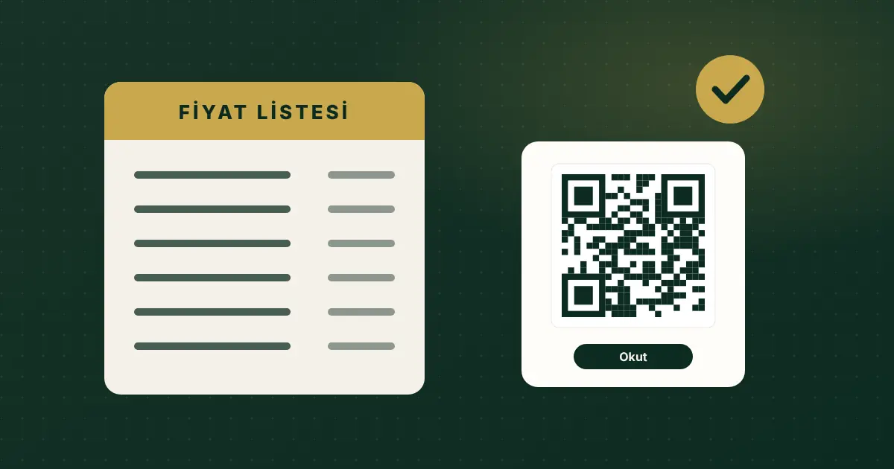

Karekodla Fiyat Listesi: Restoran ve Kafeler İçin Yönetmelik Rehberi
2025 değişikliğiyle masadaki fiyat listesi karekodla gösterilebilir hale geldi. Ama 'sadece QR' yeterli değil: misafir isterse fiziki listeyi göstermeniz gerekiyor.

Kısa cevap
Fiyat Etiketi Yönetmeliği'nde 11 Ekim 2025'te yürürlüğe giren değişiklikle lokanta, restoran, kafe ve pastanelerde masadaki fiyat listesi karekodla da gösterilebilir. Tüketici talep ederse fiyat listesi fiziksel olarak da gösterilmek zorundadır.
Bu yazı genel bilgilendirme amaçlıdır, hukuki görüş değildir. Kurallar değişebilir; işletmeniz için güncel metni Resmî Gazete ve Ticaret Bakanlığı kaynaklarından doğrulayın.
2025 değişikliğiyle ne değişti?
Ticaret Bakanlığı'nın duyurusuna göre Fiyat Etiketi Yönetmeliği'ndeki değişiklikler 11.10.2025 tarihli ve 33044 sayılı Resmî Gazete'de yayımlanarak yürürlüğe girdi. Yiyecek-içecek işletmelerini ilgilendiren başlıklar şunlar:
- Karekod tanımı eklendi. Yönetmelikte karekod, fiyat listesine erişimi sağlayan görsel olarak tanımlandı.
- Masada karekod kullanılabilir. Lokanta, restoran, kafe, pastane ve benzeri işyerlerinde masalardaki fiyat listeleri karekodla da gösterilebilir.
- Fiziki liste talep halinde zorunlu. Tüketici isterse işletme fiyat listesini fiziksel olarak da göstermekle yükümlüdür.
- Elektronik sisteme bildirim. Kriterleri Bakanlıkça belirlenen işletmeler, fiyat listesi bilgilerini Bakanlığın elektronik sistemine aktarmakla yükümlü tutuldu.
Önceki kural neydi?
1 Ocak 2024'ten itibaren uygulanan düzenlemeyle yiyecek-içecek işletmelerinin fiyat listelerini giriş kapısında ve masalarda bulundurması istenmiş, tüketicinin fiyatı görmek için karekod okutmak zorunda bırakılmaması hedeflenmişti. 2025 değişikliği karekodu masada geçerli bir gösterim yolu olarak tanımladı, ama fiziki listeyi tamamen kaldırmadı.
Kapı önündeki fiyat listesi ne olacak?
Haberlerin ve Bakanlık açıklamalarının ortak noktası, misafirin içeri girmeden fiyatı görebilmesidir. Karekod düzenlemesi masadaki listeye ilişkindir. Kapıdaki listeyi karekodla değiştirmeden önce güncel metni ve il müdürlüğünüzün uygulamasını kontrol edin.
Servis, masa ve kuver ücreti alınabilir mi?
Bakanlık açıklamalarına göre hangi ad altında olursa olsun servis, masa veya kuver ücreti talep edilemez; bahşiş tüketicinin isteğine bağlıdır. Menüde ya da hesapta bu tür bir kalem kullanıyorsanız gözden geçirin.
İşletmeler için uyum kontrol listesi
- Kapıda okunabilir bir fiyat listesi bulundurun.
- Masadaki karekodun gerçekten fiyat listesine gittiğinden emin olun; kodu okutup fiyatların göründüğünü test edin.
- Talep edilirse gösterilecek basılı bir liste hazır tutun ve personelinize nerede durduğunu söyleyin.
- Tüm fiyatlar aynı olsun. Kapıdaki, masadaki, karekoddaki ve kasadaki fiyat birbirini tutmalıdır.
- Güncelleme sırasını belirleyin. Fiyat değiştiğinde önce dijital menü, ardından basılı liste ve kapı panosu güncellensin; tarih not edilsin.
- Hesapta adı ne olursa olsun servis ücreti kalemi kullanmayın.
- Bildirim yükümlülüğünü kontrol edin. İşletmenizin elektronik sisteme aktarım kriterlerine girip girmediğini Bakanlık duyurularından takip edin.
Fiyat tutarlılığını nasıl korursunuz?
Uyumsuzluk çoğunlukla bir yerin güncellenip diğerinin unutulmasından doğar. Basılı listeyi dijital menüyle aynı kaynaktan çıkarmak riski azaltır: fiyatı tek yerde değiştirir, basılı listeyi oradan alırsınız. QR Menu Official'da fiyatlar tek panelden güncellenir; toplu indirim veya zam da panelden uygulanabilir.
Karekod düzenlemesi işletmeye ne kazandırır?
Masadaki karekod geçerli bir gösterim yolu olunca, sık değişen fiyatlar için her masaya yeniden basılı liste koyma yükü hafifler. Dijital menü ayrıca ürün açıklaması, görsel, alerjen ve dil seçeneği gibi basılı listenin taşıyamadığı bilgileri sunabilir. Yine de bu bir "basılıdan tamamen kurtulma" düzenlemesi değildir.
Dijital menünün temellerini merak ediyorsanız QR menü nedir rehberimize göz atın.
Fiyatlarınızı tek panelden güncelleyin. Paketlerde hangi menü özelliklerinin olduğunu karşılaştırın.
Paketleri İnceleyinSık sorulan sorular
Restoranda yalnızca QR menü kullanmak yasak mı?
2025 değişikliğiyle masada fiyat listesi karekodla gösterilebilir. Ancak tüketici talep ederse fiyat listesinin fiziksel olarak da gösterilmesi gerekir; yani basılı liste hazır olmalıdır.
Değişiklik ne zaman yürürlüğe girdi?
Ticaret Bakanlığı'na göre değişiklikler 11.10.2025 tarihli ve 33044 sayılı Resmî Gazete'de yayımlanarak yürürlüğe girdi.
Servis ücreti almak serbest mi?
Bakanlık açıklamalarına göre servis, masa veya kuver ücreti hangi ad altında olursa olsun talep edilemez; bahşiş isteğe bağlıdır.
Fiyat listesini Bakanlığa bildirmek zorunlu mu?
Kriterleri Bakanlıkça belirlenen işletmeler için evet. İşletmenizin bu kapsamda olup olmadığını Bakanlık duyurularından takip edin.
Kaynaklar
- T.C. Ticaret Bakanlığı — Fiyat etiketinde yeni dönem başlıyor
- Resmî Gazete — 11.10.2025 tarihli ve 33044 sayılı sayı
- Mevzuat Bilgi Sistemi — Fiyat Etiketi Yönetmeliği
Son kontrol: 30 Ekim 2026. Yazıda yer alan ürün özellikleri QR Menu Official'ın mevcut paket içeriğiyle sınırlıdır.